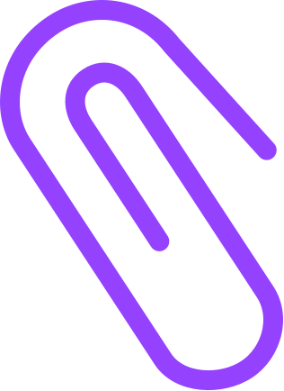

01
Structured requests for every job.
Templates come configured for every entity type and every workflow — every request starts with the right queries for the right context, year-round.
The tax information workflow platform built specifically for Australian firms. Structured information requests for every tax job across the year.
Tax season turns into a job of chasing — emails, follow-ups, half-answered questions, scattered documents.
Most firms accept this as how the work gets done. It doesn't have to be.
And you still don't have everything you need to start.
Half the day disappears into status updates that should have taken thirty seconds.
Three mechanics turn reactive chasing into a structured, year-round workflow. Every feature traces back to them.
One platform. First request to final review.

Templates come configured for every entity type and every workflow — every request starts with the right queries for the right context, year-round.
One dashboard. See which queries are with client or need action across every job you're running. No hunting through email threads.
One login for every entity, across every request. Clear next steps, plain-English questions — no clunky portals, no forgotten passwords.
One screen. Every entity, every FY, every query — visible at a glance.
Below: the live dashboard a partner sees first thing in the morning.

See exactly which queries are outstanding, with whom, and what's ready for review — without opening a single email.
Sections and queries that match how your firm works. Roll templates into a new FY without rebuilding them.
Documents, replies, and follow-ups live in context — not scattered across inbox threads.
What changes when a firm runs Taxy across one of their multi-entity client groups for a year.
"Taxy was incredibly easy to get up and running. It's transformed how we collect client information — everything comes into one place, so we always know what we're waiting on and where each return is up to."

No commitment. Our team handles the setup and runs alongside your existing workflow until you're comfortable.
Accountants usually start exploring Taxy when managing tax return jobs becomes frustrating for their team and their clients. These come up most.
Looking for more? FAQs for accountants · FAQs for clients.
Taxy helps accounting firms structure, send and track client information requests for tax jobs.
Clients receive clear requests in one place; your team can immediately see what's been provided and what's still outstanding.
Email threads and portals often become a dumping ground for documents and questions, making it hard to see what's still missing.
Taxy structures requests so clients know exactly what's required and teams can quickly track progress without digging through emails.
Most firms send their first request within a few days. Many begin with a single job or multi-entity client group to see how Taxy fits alongside their existing workflow.
Most firms are surprised by how quickly clients respond when requests are clear and organised. Clients see exactly what's needed and can work through requests at their own pace.
Yes. Information is encrypted, stored in Australia, and only accessible to authorised users in your workspace.